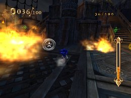
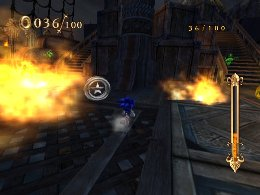

金メダルへの道 その２
上級者編
■金メダルにおける各ミッションの条件と有効なスキル
ワールド共通条件のミッション別に金メダルにオススメな有効スキルと簡単なコツについての説明を行いたいと思います。
◆「ランページ！（マジンを倒せ）」
マジンをいかにはやく倒すかがポイントになってきます。
攻撃系のスキル「ファイヤーゲイズ」「ファイヤータックル」「ボルカノンスライダー」といったものを装備すると良いですが、「ホーミングアタック」を重視することを踏まえて、優先的に「ロケットジャンプ」「H・メガエキスパンズ」「ホーミングリカバリー」を装備しておくとタイムをぐぐっと縮めることが可能です。

◆「ステルス アタック（マジンをたおさずに進め）」
マジンを倒すとすぐにミッション失敗になってしまう為、攻撃系スキルの装備は厳禁です。
逆に敵に当たってもダメージを受けない「イージススライダー」を装備しておくと、大きくスピードを
落とさずに敵をやり過ごせます。
また、敵にロックオンする必要が無い為、「H・エキスパンズ」系のスキルを外すと良いでしょう。
間違って敵にホーミングアタックをしてしまったらすぐにホーミングアタックキャンセルで対処しましょう。
敵の配置を覚えて、予め回避できるルートを探すのが良いでしょう。


◆「ダイハード チャレンジ（１度もたおれずに進め）」
ダメージを受けてもミッション失敗にはならないので、クリアを目指す分には楽なミッションかと思いますが、基本的にダメージを受けるとタイムロスになるので、「ステルス アタック」や「パーフェクト チャレンジ」といったミッション同様のプレイが必要になってきます。
こちらのミッションではマジンを倒しても良いので、少しタイムをロスしてでもパール回収を目的としたマジン撃破を試みる方がタイムが縮まるケースもあります。
スキルはおすすめスキルからチョイスすれば問題ありません。

◆「コレクト リング（リングを○○枚集めろ）」
応用編にも記載されておりますが、ミッションスタート時のリング数を増やす「リングボーナス」を装備することがまずタイムを縮める必須条件となります。
取り逃さずに集める事がタイムを縮めるポイントなのは当然なのですが、ミッションによっては多少遠回りになってもリッチリング（２０枚獲得出来るリング）を取得する事で速くクリア出来る場合もありますので、リッチリングがある場所を探すのもポイントになります。
 

◆「ヘッド トゥ ヘッド（ウーフーより先にゴールへ）」
金メダルを目指す時は当然「ウーフー」をぶっちぎっていることが前提なので、「ウーフー」を意識したプレイを考える必要はありません。
おすすめスキルを装備し、直線では「スピードブレイク」をこまめに使い、タイム短縮を目指しましょう。
また、右上にある数値は「ウーフー」との距離の差を示した数値になります。繰り返しプレイする際はこの数値を見る事である程度自分のタイムを計ることが出来るので参考にすると良いでしょう。
スーパープレイ
スケルトンドーム
ランページ！ マジンを40体たおせ
連続ホーミングアタックでリモコンを振るタイミングを遅らせて、画面外にいる近距離の敵をロックオンしてから遠距離の敵を攻撃します。
【装備スキル一覧】
チャージャー オールラウンダー クイックハイステップ クイックエア ワープブースト ハイパースピードアップ ランディングブースト ファイヤータックル キャンセルブースト ファイヤーゲイズ スプラッシュジャンプ ロケットジャンプ Ｈメガエキスパンズ ホーミングリカバリー クイックジャンプ イージススライダー クイックハイスライド ハイパースキマー ハイパーサージ リングボーナス ワープダッシュ クレストオブウィンド
 RSS
RSS